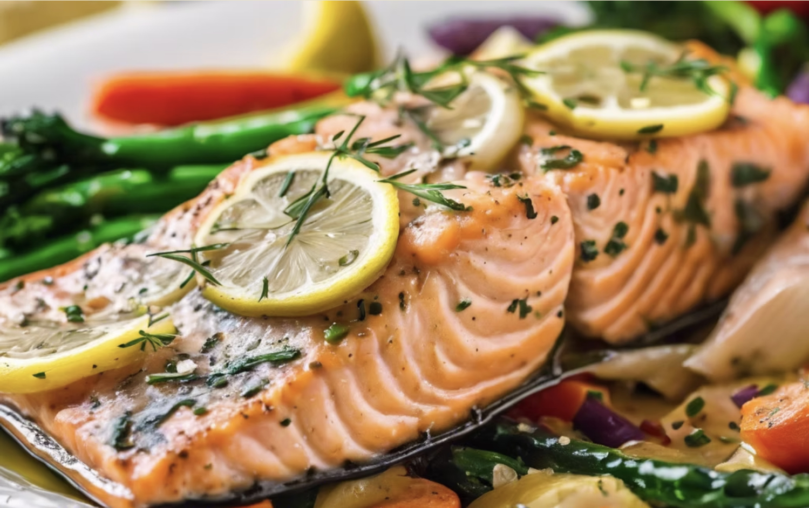

Lemon Garlic Salmon with Steamed Vegetables
About the Recipe

Ingredients
- 1 salmon fillet
- 1 tsp olive oil
- ½ lemon (juiced)
- 1 garlic clove (minced)
- ½ tsp dried oregano
- Salt & pepper to taste
- 1 cup steamed broccoli and carrots
Preparation
- Preheat oven to 400°F (200°C).
- Mix lemon juice, olive oil, garlic, oregano, salt, and pepper.
- Coat salmon with the mixture and bake for 15-18 minutes.
- Serve with steamed vegetables on the side.